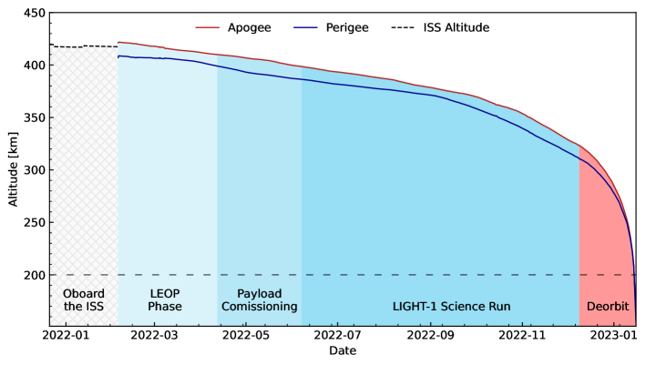
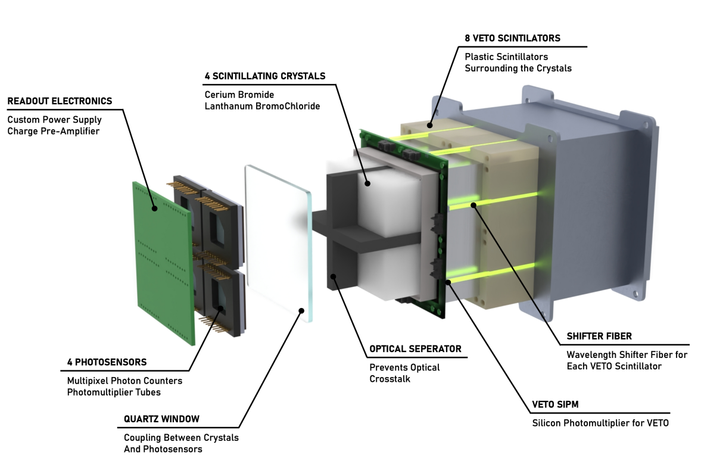
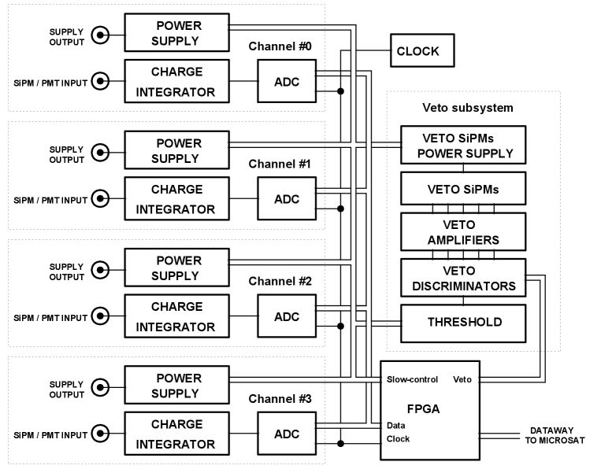
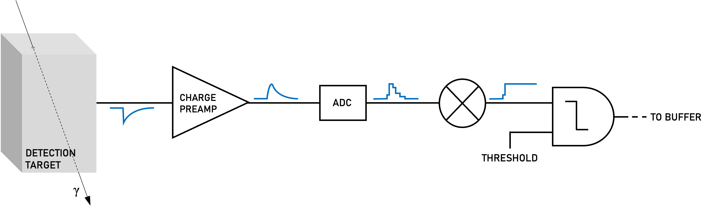
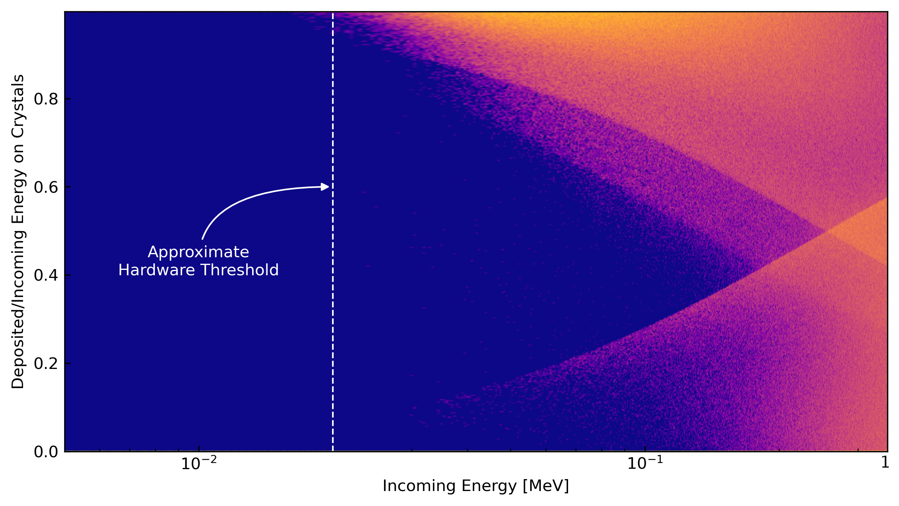
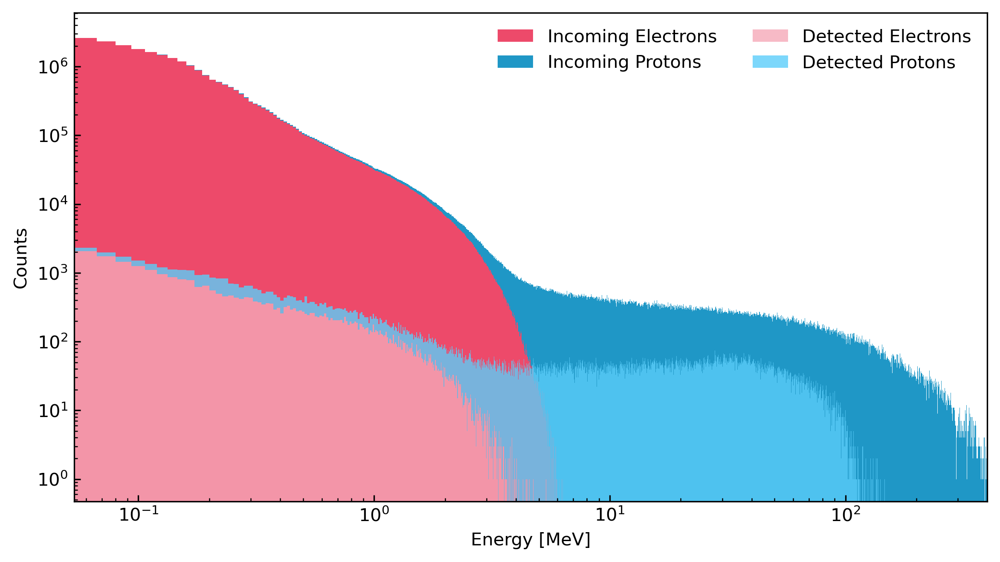
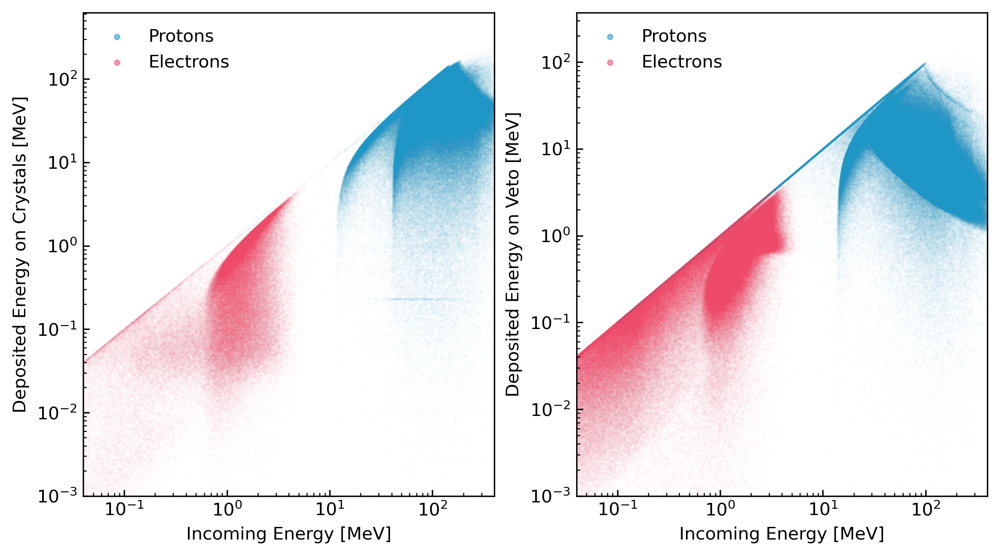
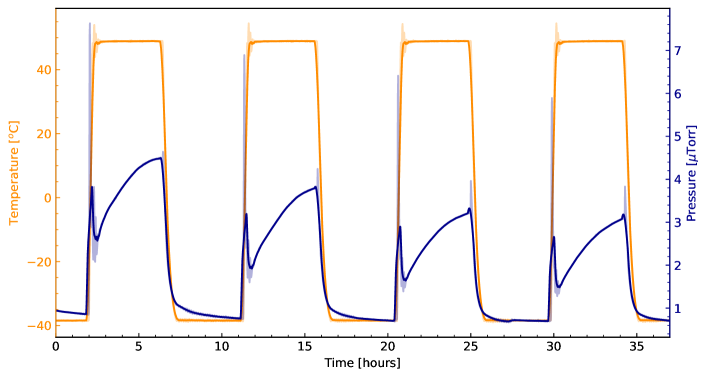
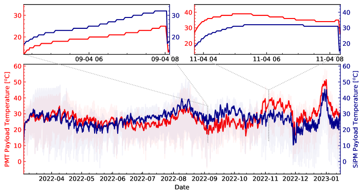
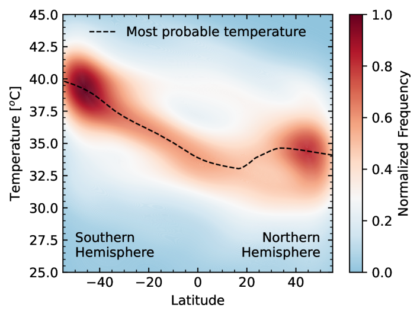

utf8 \affiliation[a]Gran Sasso Science Institute,Viale Crispi n.7, 67100, L’Aquila, Italy \affiliation[b]New York University Abu Dhabi, Saadiyat Island, Abu Dhabi, UAE \affiliation[c]Center for Astro Particle, and Planetary Physics, New York University Abu Dhabi, Saadiyat Island, Abu Dhabi, UAE \affiliation[d]UCL Mullard Space Science Laboratory, Holmbury Hill Road, Dorking, Surrey, RH5 6NT, UK \affiliation[e]UAE Space Agency, Masdar City, Abu Dhabi, United Arab Emirates \affiliation[f]Mittelstraße 3A,40721 Hilden, Germany \affiliation[g]Gran Sasso Tech foundation, Viale Crispi n.7, 67100, L’Aquila, Italy \affiliation[h]AGE Scientific srl, Capezzano Pianore, Lucca, Italy \affiliation[i]ASI Space Science Data Center (ASI-SSDC), Via del Politecnico, Rome, Italy \affiliation[k]Eureka Scientific, Oakland, Ca., USA \affiliation[j]INAF, Osservatorio Astronomico di Roma (INAF-OAR), Via di Frascati, Monte Porzio Catone, Rome, Italy \affiliation[l]University of Florence, Firenze, Italy \emailAddadriano.digiovanni@gssi.it; francesco.arneodo@nyu.edu
RAAD: حمولة القمر المكعب LIGHT-1 لكشف ومضات أشعة غاما الأرضية
الملخص
يكشف الكاشف الجوي سريع الالتقاط (RAAD)، الموجود على متن القمر المكعب LIGHT-1 ذي 3U، الفوتونات الواقعة بين الأشعة السينية الصلبة وأشعة غاما اللينة، بهدف تحديد ومضات أشعة غاما الأرضية (TGFs) وتوصيفها. اختبرت ثلاثة تكوينات للكواشف، باستعمال بلورات وميض من بروميد السيريوم وبروموكلوريد اللانثانوم مقترنة بأنابيب مضاعفة ضوئية أو بعدادات فوتونية متعددة البكسلات، بغرض تحديد التركيبة المثلى لكشف TGFs. تتيح الدقة الزمنية العالية، ونافذة القدح القصيرة، وزمن الاضمحلال القصير لإلكترونياته أن يجري RAAD قياسات دقيقة للأحداث العابرة الفورية. نصف هنا نظرة عامة على مفهوم الكشف، وتطوير إلكترونيات الالتقاط الأمامية، وكذلك الاختبارات الأرضية والمحاكاة التي خضعت لها الحمولة قبل إطلاقها في 21 من ديسمبر 2021. كما نقدم تحليلا لسلوك منظومة الكاشف في المدار وبعض النتائج الأولية.
كواشف أشعة غاما، كواشف الأشعة السينية، الوماضات، إلكترونيات فضائية على متن المركبات، الأجهزة الفضائية، كواشف الجسيمات \arxivnumber1234.56789
1 مقدمة
ومضات أشعة غاما الأرضية (TGFs) هي اندفاعات فوتونية شديدة اللمعان وموجهة إلى أعلى، تقل مدتها عن 1 ms وتمتد طاقاتها من 10 keV حتى تصل إلى عدة عشرات من MeV[Briggs2013, Dwyer2012, Fishman1994, Marisaldi2010, Nemiroff1997, Tavani2011]. تنتج هذه الومضات في الحقول الكهربائية العالية التي تنشأ طبيعيا داخل العواصف الرعدية، على ارتفاعات تبلغ 10 - 15 km، عندما تتسارع الإلكترونات إلى سرعات نسبية وتنتج الفوتونات عبر إشعاع الفرملة [Dwyer20122, Dwyer2013, Khamitov2020, Nemiroff1997]. ويقدر أن ما مجموعه أكثر من 400,000 من TGFs ينتج سنويا [Briggs2013]، وتتركز هذه الومضات أساسا حول خط الاستواء [Fishman1994].
اكتشف Fishman et al. ومضات TGFs لأول مرة باستخدام بيانات حصلوا عليها من تجربة مصادر الانفجارات والعابرات (BATSE) على متن مرصد كومبتون لأشعة غاما (CGRO) التابع لوكالة NASA في 1994 [Fishman1994]، وتبين أنها مرتبطة بنشاط البرق. وقد بنيت BATSE لكشف أشعة غاما القادمة من مصادر سماوية، ومن ثم كانت حساسة لطاقات قدرها 20 keV. غير أن معدل أخذ العينات في BATSE، وهو ms، كان أطول من المدة النموذجية لوامضة TGF التي تقل عن الملي ثانية، مما أدى إلى عدد قليل جدا من عمليات الكشف [Fishman1994, Nemiroff1997].
تمكن المصور الطيفي الشمسي عالي الطاقة Reuven Ramaty التابع لوكالة NASA (RHESSI)، الذي بني في الأصل لدراسة التوهجات الشمسية، من كشف TGFs أيضا. غير أن كواشف الجرمانيوم في RHESSI كانت حساسة لفوتونات لا تتجاوز طاقاتها 18 MeV. [Smith2005]. ومع ذلك، أثبتت كشوف RHESSI أن TGFs يمكن أن ترصدها أقمار صناعية عاملة في LEO (المدار الأرضي المنخفض) [Cummer2005, Grefenstette2009]. وتمكن كل من “Astro-Rivelatore Gamma a Immagini Leggero” (AGILE) ومراقب انفجارات أشعة غاما (GBM) على متن تلسكوب فيرمي الفضائي لأشعة غاما التابع لوكالة NASA من كشف الطيف الطاقي الكامل لـ TGFs [Fuschino2009, Marisaldi2010, Marisaldi2011, Atwood2009, Meegan2009, Briggs2010, Roberts2018]. وبما أن البعثات المذكورة أعلاه حسنت لكشف ظواهر أخفت وأطول مدة، فقد عانت كواشفها من التراكب والتشبع عند رصد TGFs عالية اللمعان والطاقة.
حتى الآن، درست TGFs في المقام الأول بوصفها نواتج جانبية لبعثات مصممة لكشف ظواهر أخرى، مما أتاح فرصة لبعثات متخصصة. ومن هذه البعثات راصد تفاعلات الغلاف الجوي-الفضاء (ASIM) التابع لوكالة الفضاء الأوروبية، الذي ثُبّت في 2018 على محطة الفضاء الدولية (ISS)، وتمكن من تأكيد نماذج TGFs المفترضة المنبثقة من دراسات سابقة عبر الجمع بين الرصد في المجال keV - MeV والبيانات البصرية [Neubert2009, BjrgeEngeland2022].
وعلى الرغم من أن طبيعة TGFs الساطعة والوجيزة جعلت توصيفها صعبا بالمعدات غير المتخصصة في البعثات الأولى، فإنها جعلت كشفها ممكنا أيضا باستخدام كواشف صغيرة بما يكفي لتلائم الأقمار المكعبة (أي أقمار بيكو مطورة بتكاليف منخفضة). لذلك اقترحنا الكاشف الجوي سريع الالتقاط (RAAD)، وهو أداة صممت خصيصا لكشف TGFs، لتكون حمولة بعثة القمر المكعب LIGHT-1. يبين الجدول 1 خصائص أداء LIGHT-1 مقارنة بالبعثات السابقة. وقد اختير الاختصار RAAD أيضا لتشابهه مع الكلمة العربية "Ra’ad" ( \<رعد> ) التي تعني الرعد.
في هذه الورقة، نقدم وصفا مفصلا لإلكترونيات الحمولة، والاختبارات الأرضية والمحاكاة، وكذلك بعض البيانات الأولية في المدار. وقد بني نموذج أولي من RAAD واختبر في NYUAD، فقدم برهانا على المفهوم. ويمكن العثور على تفاصيل النموذج الأولي في [DiGiovanni2019]. أما تفاصيل حافلة القمر المكعب وأنظمته الفرعية فتوجد في [Almazrouei2021].
| Mission | Trigger Window (ms) | Resolution (s) | Dead Time Per Event (s) | Sensitivity (MeV) |
|---|---|---|---|---|
| BATSE | 64 | 2 | 6 | 0.02 2 |
| RHESSI | None | 0.95 | 8 | 0.003 17 |
| AGILE | 0.293 | 1 | 65 | 0.3 100 |
| FERMI | 16 | 2 | 2.6 | 0.001 40 |
| LIGHT-1 | 0.5 | 0.5 | 0.04 | 0.02 3 |
2 بعثة LIGHT-1
2.1 مفهوم البعثة
يمكن أن يثبط الامتصاص في الغلاف الجوي TGFs؛ ومن ثم فإن قياس انبعاث أشعة غاما وحده لا يوفر معلومات كاملة عن خصائصها [Mailyan2019]. ونتيجة لذلك، يفضل عموما القياس المركب على قناة كشف منفردة. وقد يوفر الجمع بين كشف أشعة غاما الجوية ومسوح الأشعة السينية وأشعة غاما أو قياسات رادار البرق معلومات ثاقبة عن آليات إنتاج TGFs [Chronis2016, Mailyan2018]. وانطلاقا من هذه الفرضية، يكون كاشف أشعة غاما عامل في LEO، مع أرصاد وقياسات مترابطة أرضية وفضائية، مسبارا مثاليا لتنفيذ برنامج علمي خاص بـ TGF.
LIGHT-1 هو قمر مكعب من فئة 3U بني أساسا لدراسة TGFs. ومع ذلك، تمتد بعثة LIGHT-1 إلى قياس الإشعاع المداري وتأهيل تقنيات مختلفة فضائيا لكشف الانبعاثات الفورية والعالية الطاقة والشديدة المميزة للأحداث العابرة. وللمقارنة الحجمية، تتكون وحدة U واحدة من القمر المكعب من مكعب يبلغ نحو . ويخصص أقل قليلا من وحدتين من LIGHT-1 لـ RAAD، بينما يخصص الباقي للأنظمة الفرعية للقمر المكعب (عجلات رد الفعل، والحاسوب على المتن، ونظام التحكم في الاتجاه، ونظام القدرة الكهربائية، وغيرها). وتتوفر مراجعة عن تشغيل كواشف أشعة غاما على متن الأقمار المكعبة في [Arneodo2021].
يستخدم RAAD ثلاثة أنواع من الكواشف، عبر إقران نوعين من الحساسات الضوئية بنوعين من بلورات الوميض. وفي الواقع، تهدف بعثة LIGHT-1 أيضا إلى إجراء مقارنة مباشرة بين تكوينات كواشف مختلفة لتحديد الأنسب منها لكشف TGFs. وتعد LIGHT-1 أول بعثة تجري مقارنة مباشرة بين بلورات وميض بروميد السيريوم وبروموكلوريد اللانثانوم، مقترنة إما بأنابيب مضاعفة ضوئية وإما بمضاعفات ضوئية سيليكونية.
2.2 الجدول الزمني للبعثة

أطلق القمر المكعب LIGHT-1 في 21 من ديسمبر 2021، على متن Space-X Falcon9/Dragon من مركز كينيدي للفضاء، متوجها إلى محطة الفضاء الدولية (ISS). وتولت وكالة استكشاف الفضاء اليابانية (JAXA) التعامل مع LIGHT-1 للإطلاق والنشر اللاحق. وبعد وصوله إلى ISS، نشر عبر وحدة التجارب اليابانية (JEM) في 3 من فبراير 2022، في مدار بميل 51.6°وعلى ارتفاع ابتدائي قدره .
يبين الشكل 1 أنظمة تشغيل بعثة LIGHT-1 بدلالة الزمن. وخلال مرحلة الإطلاق والمدار المبكر (LEOP)، اختبرت حافلة القمر الصناعي التي طورتها NanoAvionics بالكامل وحسنت لعمليات البرنامج العلمي. وشغلت الحمولة لمدة دورة مدارية كاملة في 16 من مارس 2022 للتحقق من معلماتها الحيوية. وبدأ تشغيل الحمولة تجريبيا في 6 من أبريل 2022. وفي 25 من مايو 2022، دخل LIGHT-1 نمط التشغيل العلمي. وتوقفت الاتصالات مع LIGHT-1 في 18 من يناير 2023، معلنة بدء مرحلة الخروج من المدار ونهاية البعثة.
3 مواصفات الحمولة العلمية
| Parameter | Design value | Actual Value |
|---|---|---|
| Mass [kg] | 2.05 0.07 | 1.981 0.001 |
| Average Power Consumption [W] | 5.9 W | 4.8 W |
| Data Downlink [MB/24 h] | 40 | 40 |
| Duty Cycle [%] | 50 | 50 |
| Life Time [months] | 6 | 10 |
| Temperature operative range [] | 0 45 | 10 40 |
صمم RAAD لتمييز أحداث تفصل بينها مئات النانوثواني، وقياس الطاقة المودعة، وإسناد طابع زمني للمقارنة مع فهارس TGFs والبرق التي تولدها تجارب أخرى.
3.1 بنية الكاشف
يتكون RAAD من كاشفين مختلفين في الحجم، يشغلان 1 U و0.7 U من المركبة الفضائية، على التوالي. وتظهر بنية الكاشف في الشكل 2.

الكاشف الأصغر، وهو حمولة MPPC، مزود بأربعة عدادات فوتونية متعددة البكسلات (MPPCs) من نوع S13361-6050AE-04 مصنعة من Hamamatsu Photonics ومقترنة بمصفوفة بلورية من بروميد السيريوم منخفض الخلفية (CeBr3(LB)) ذات 4 قنوات، مصنعة من Scionix ومبينة في الشكل 3. أما الكاشف الأكبر، وهو حمولة PMT، فهو مزود بأربعة أنابيب مضاعفة ضوئية R11265-200 (من Hamamatsu Photonics) ومقترن بمصفوفة واحدة من أربع بلورات وميض منظمة في زوج واحد من CeBr3(LB) وزوج واحد من بروموكلوريد اللانثانوم (LBC)، وكلاهما مصنع من Scionix. ونشير إلى كل مصفوفة حساسات ضوئية مقترنة ببلورات الوميض المناظرة بوصفها هدف الكشف في RAAD. وتظهر الفروق بين الحساسين الضوئيين في الجدول 3.
| Parameter | R11265-200 | S13361-6050AE-04 |
|---|---|---|
| Type of photosensor | PMT | MPPC |
| Dimensions () [] | ||
| Mass [g] | 24 | 2 |
| Max Sensitivity [nm] | 400 | 450 |
| Quantum Efficiency - Photon Detection Efficiency [%] | 43 | 40 |
| Operating Voltage [V] | 900 | 55 |
| Gain at working point | ||
| Dark Counting Rate at working point, 300 K [Hz] | < 1 | |
| Operating Temperature [K] | 240 - 320 | 250 - 330 |
إن أداء البلورات عند طاقات مختلفة، المبين في الجدول 4، يجعلها متكاملة. فالنشاط الذاتي في LBC، مع أنه من جهة مصدر إزعاج واضح، قد يوفر من جهة أخرى أداة معايرة مدمجة. ولا يمثل معدل العد المظلم العالي في MPPC مشكلة عند القدح عند (انظر 4.2).
تبلغ أبعاد كل وحدة من بلورات الوميض ، بينما تبلغ أبعاد مصفوفات بلورات الوميض كاملة ، وكتلتها و بالنسبة إلى وLBC على التوالي.

تفصل البلورات الوميضية الأربع بمادة بولي تترافلوروإيثيلين (PTFE) لتجنب التخاطب البصري. ومن أجل منع آثار تلوث بخار الماء أثناء مرحلة التجميع، توضع مصفوفة البلورات المسترطبة في حاوية محكمة الإغلاق. وتغطى خمسة جوانب بالألومنيوم، بينما تستخدم في الجانب السادس طبقة من السيليكا المنصهرة بسماكة 2 mm لوصل مصفوفة الحساسات الضوئية بالبلورات بصريا.
| Parameter | CeBr3(LB) | LBC |
|---|---|---|
| Density [] | 5.1 | 4.9 |
| Hygroscopic | Yes | Yes |
| Light Emission Peak [nm] | 370 | 380 |
| Energy Resolution at 122 keV [%] | 10 | 7 |
| Energy Resolution at 662 keV [%] | 4 | 3 |
| Decay Time [ns] | 20 | 35 |
| Intrinsic Activity [] | 1 |
تقترن الإلكترونيات الأمامية مباشرة بظهر مصفوفة الحساسات الضوئية كما يظهر في الشكل 4.

ترد دراسة مفصلة وتوصيف لمفهوم الكشف في [DiGiovanni2019].
تحيط منظومة VETO بهدف الكشف من أربع جهات. والغرض منها التعرف جزئيا إلى الخلفية المستحثة بالجسيمات المشحونة وكبحها. وتتكون من ثماني وحدات مستقلة، تتألف كل منها من صفيحة وميض بلاستيكية بسماكة 5 mm تضم ليفا مزحزحا للطول الموجي وتقرأ عند أحد أطرافها بمضاعف ضوئي سيليكوني SMD (SiPM) مصنع من AdvanSiD srl (ASD-NUV1C-P-40). ويظهر نموذج CAD لمنظومة VETO في الشكل 2.
يوضع هدف الكشف مع مصفوفة الحساسات الضوئية والإلكترونيات المرتبطة بها داخل غلاف من الألومنيوم مصمم للاقتران ميكانيكيا بمركبة القمر المكعب. ويظهر التجميع النهائي لحمولة PMT في الشكل 5.

قيم أثر جدران الألومنيوم بمحاكاة Geant4، المعروضة بالكامل في القسم 4.2، مشيرة إلى عتبة كشف عتادية لأشعة غاما تقارب 20 keV.
استعمل راتنج سيليكوني من الدرجة الفضائية (Momentive RTV615) لملء الفراغات في التجميع من أجل تخفيف أثر الاهتزاز على البنية وتوفير عزل كهربائي فعال للجهد العالي () اللازم لتشغيل الحمولة. وبوجه عام، تفي طبقات التغليف المتعددة بمتطلبات السلامة في البعثة، وتحد من خطر التشظي.
3.2 إلكترونيات قراءة الحمولة والتحكم بها
تتكون إلكترونيات RAAD من ثلاثة مكونات رئيسية.
-
1.
إلكترونيات قراءة VETO
-
2.
مزود طاقة الحساسات الضوئية
-
3.
اللوحات الأمامية ولوحات التحكم

| Parameter | Design value |
|---|---|
| Average Power Consumption [W] | 5.9 |
| Mass [g] | 58 (MPPC), 66 (PMT) |
| ADC resolution range [bits] | 10 16 |
| Components | SMD, all COTS, Automotive grade |
| Operating modes | noise, default, science, custom, safe |
تظهر إلكترونيات تغذية الطاقة لحمولتي MPPC وPMT في الشكل 7.

باستثناء وحيد هو مقابس الحساسات الضوئية، لم تستخدم أي موصلات في حمولة LIGHT-1 من أجل تعظيم الاكتناز والموثوقية.
3.3 نظرة عامة على البرنامج الثابت
صمم البرنامج الثابت على متن المركبة من أجل إسناد كل البيانات المجموعة إلى فئات محددة (أي أحداث غاما والأحداث المستحثة بالجسيمات المشحونة، وأحداث TGF، وبيانات رصد المدار).
يمكن تلخيص استراتيجية الكشف في سلسلة الخطوات المدرجة أدناه (انظر الشكل 8).
-
1.
تفاعل الجسيم وتوليد الإشارة في الكاشف؛
-
2.
يدمج مضخم الشحنة الإشارة. وتؤخذ عينات خرجه بواسطة ADC (16 بت، 10 MHz) ثم تمرر عبر مرشح مطابق [Arneodo2021] لاستخراج قيمة الشحنة العظمى؛
-
3.
إذا كانت قيمة الشحنة أكبر من عتبة الكشف، يسند طابع زمني للحدث ويرسل الحدث إلى حافلة المركبة الفضائية.

تنظم بيانات الحمولة المتولدة في أربعة مخازن مؤقتة، صمم كل منها لتخزين أنواع مختلفة من الأحداث كما هو مبين في الجدول 6.
| Data Buffer | Description |
|---|---|
| NonVeto | All the events in which there is no VETO flag. The ADC resolution is lowered to 10 bits, timestamp at 1 ms resolution |
| Veto | All the events in which there is at least one (out of eight) VETO flag active. The ADC resolution is lowered to 14 bits, timestamp at 100 resolution |
| TGF | All the events falling into a coincidence window of 500 in which there is no VETO flag. The ADC resolution is nominal (16 bits), 500 ns timestamp resolution |
| Orbit | Payload housekeeping events collected once every 20 s including the payload temperature, the particle rate of each channel and the VETO, the detector operating voltage, the payload operating configuration (e.g. noise, default, flight mode), and all the working parameters required to run diagnostic checks |
تنقل البيانات العلمية إلى الأرض باستخدام منظومة النطاق S أثناء المرور اليومي فوق محطات أرضية مخصصة للبعثة [Almazrouei2021]. ويمكن لكل اتصال (حتى 6 مرات في اليوم) أن يستمر حتى 10 دقائق. أما قياسات المركبة الفضائية عن بعد، التي تتضمن بيانات التدبير المنزلي والأوامر التشغيلية ونصوص الحمولة، فتنقل باستخدام مرسل-مستقبل UHF.
4 المحاكاة والاختبارات قبل الطيران
من أجل تأهيل RAAD فضائيا، أخضعت جميع مكونات الحمولة والحمولة ككل لعدة اختبارات بيئية ووظيفية، بغرض تقييم القدرة على البقاء في الأنظمة المختلفة النموذجية للبعثة (مرحلة الإطلاق، والإجهاد الحراري، والإشعاع، وغير ذلك).
4.1 تحليل الإجهاد
قبل إجراء اختبارات الاهتزاز على التجميع الفيزيائي للحمولة، أجري تحليل إجهاد لدراسة أثر ظروف الإطلاق على البنية. وبوجه خاص، أجري تحليل بالعناصر المنتهية لحساب التردد والسعة العظمى لأول 20 نمطا اهتزازيا.
فرضت المتطلبات الحسابية الكبيرة لمثل هذه التحليلات تبسيطا هندسيا للنماذج 3D المستخدمة. ومع ذلك، كان التبسيط ضمن نطاق معقول بحيث لا يضيف أكثر من 10% إلى الكتلة الكلية للحمولة.
المتطلب العام لتأهيل مثل هذه المعدات فضائيا كي تنجو من الإطلاق هو أن تكون الأنماط الطبيعية أعلى من 100 Hz (انظر [esa-testing]). ومن خلال المحاكاة، تحققنا من أن تصميمنا يفي بهذا المتطلب، إذ تقع جميع الأنماط العادية بين 1200 Hz و2000 Hz.
4.2 محاكاة Geant4
باستخدام إطار Geant4، طورت محاكاة فيزياء جسيمات بلغة C++ لتقييم كفاءة الكواشف، وكذلك ترسيب طاقة الخلفية في البلورات وVETO الناجم عن الجسيمات المشحونة المحبوسة في المجال المغناطيسي للأرض. وقد بسطت هندسة الكاشف لزيادة الأداء. ويمكن العثور على شيفرة المحاكاة والتحليل في [Geant2022].
تمكنا من تقدير العتبة العتادية للكاشف بإرسال فوتونات ذات طاقات تتراوح من إلى وتسجيل الطاقة المودعة في كل مكون من مكونات الكاشف. يبين الشكل 9 نسبة الطاقة المودعة في البلورات إلى الطاقة الواردة بدلالة طاقة الفوتون الوارد. ونرى أننا نبدأ بكشف الفوتونات عند نحو .

باستخدام نظام معلومات البيئة الفضائية SPace ENVironment Information System (SPENVIS) التابع لوكالة الفضاء الأوروبية [SPENVIS]، قدر فيض وطيف طاقة البروتونات والإلكترونات المحبوسة على طول مدار LIGHT-1، مما وفر الدخل لمحاكاة طيف الخلفية للكواشف المبنية على Geant4. ويظهر ترسيب الطاقة في البلورات مقابل طيف الطاقة الأصلي للجسيمات في الشكل 10، بينما تظهر مقارنة أكثر تفصيلا بين الطاقة المودعة في VETO مقابل البلورات في الشكل 11.


4.3 اختبارات الاهتزاز
تجرى اختبارات الاهتزاز عادة على الأقمار المكعبة المجمعة بالكامل لاختبار قدرتها على النجاة من الإطلاق. غير أنه، نظرا إلى أن حمولتنا استخدمت نوافذ كوارتز وبلورات، طلبت JAXA إجراء اختبارات اهتزاز إضافية على هذه المكونات منفردة قبل دمجها في التجميع الرئيسي.
أجريت اختبارات الاهتزاز في جامعة نيويورك أبوظبي (NYUAD). واستعمل هزاز بمغناطيس دائم لمحاكاة ملف الاهتزاز الخاص بالإطلاق، إضافة إلى معلمات أخرى حددتها JAXA. ويرد مخطط إجراء الاختبار أدناه:
-
1.
مسح من 20 Hz إلى 2 kHz لتحديد الأنماط العادية للمكون.
-
2.
اختبار مدته 7s باستخدام مسح ترددي مصمم لمحاكاة ظروف إطلاق مركبة نقل محتملة كما قدمتها JAXA.
-
3.
مسح من 20 Hz إلى 2 kHz لمقارنة الأنماط العادية للمكون بعد التعرض لظروف الإطلاق.
أجري هذا الاختبار لمحاكاة ثلاث مركبات فضائية مرشحة، هي H-II Transfer Vehicle (HTV)، وCygnus NG، وSpaceX Dragon. وقد أصبحت الأخيرة مركبة النقل المختارة لـ LIGHT-1. وخضعت مصفوفتا البلورات ووحدة PMT لهذه الاختبارات، ونجت جميعها من دون أعطال ميكانيكية، مما أكد أن مكونات RAAD آمنة للإطلاق.
4.4 اختبارات الفراغ الحراري

كان وضع أربع بلورات في العلبة نفسها حلا لمشكلة ضيق الحيز القائمة في بعثات الأقمار المكعبة، لكنه مفهوم لم يكن قد اختبر في البعثات الفضائية. لذلك كان من الضروري إجراء اختبارات فراغ حراري على مصفوفات البلورات لتحديد قدرتها على البقاء في بيئة الفضاء. أجري نوعان من اختبارات الفراغ الحراري على مصفوفات البلورات:
-
1.
اختبارات اليوم الواحد: تركت المصفوفات في حجرة الفراغ الحراري لمدة تقارب 24 ساعة عند درجة حرارة مضبوطة قدرها 40 oC وضغط مضبوط قدره 1 Torr.
-
2.
اختبارات الأيام الثلاثة: تركت المصفوفات لمدة تقارب 72 ساعة عند ضغط مضبوط قدره 1 Torr مع دورة حرارية تتذبذب فيها درجة الحرارة كل خمس ساعات بين -40 oC و50 oC، محاكية الظروف التي تواجهها الأقمار الصناعية في الفضاء. ويمكن العثور على مثال لهذه الدورة في الشكل 12.
في كلا اختباري الفراغ الحراري، وضعت المصفوفات فوق مادة عازلة لمنع الجانب السفلي من المصفوفات من التسخن بسرعة أكبر من بقية المصفوفة بسبب تماسها مع القاعدة المعدنية الداخلية للحجرة. وساعدت هذه الاختبارات في إعادة تقييم بنية المصفوفات بحيث يمكن تحسينها للطيران الفضائي. وبوجه خاص، كشف خطأ تصنيعي أدى إلى تكاثف داخل إحدى المصفوفات أثناء الدورة الحرارية، مما استلزم إصلاحها من قبل الشركة المصنعة. وأجريت هذه الاختبارات في كل من مختبر YahSat في جامعة خليفة وNYUAD.
5 الأداء أثناء الطيران
قيم أداء الحمولة وسلامتها بصورة مستمرة طوال البعثة. وفي هذا القسم، نربط بعض البيانات التجريبية المرصودة في المدار بالمعلمات التي استخدمناها لتقييم حالة تشغيل حمولة LIGHT-1.
5.1 سلامة الجهاز
طوال البعثة، راقبنا سلامة العتاد عبر الحساسات الموجودة على المتن. وبوجه خاص، قاس حساس درجة الحرارة Texas Instruments LM71 المدمج في كل لوحة من لوحات إلكترونيات القراءة درجة حرارة الحمولة على مدى عمر البعثة. وتظهر القياسات الناتجة، من تشغيل الحمولة تجريبيا حتى الخروج من المدار، في الشكل 13.

تعد بيانات درجة حرارة الحمولة أثناء المدار مهمة لتصحيح انجراف كسب الكاشف [DiGiovanni2019]، ولضبط دورة العمل التشغيلية أثناء الطيران لتجنب فرط السخونة. وكما يظهر في إدراجات الشكل 13، التي تمثل درجة الحرارة المسجلة أثناء تشغيل الحمولة، ترتفع درجة الحرارة على نحو ملحوظ خلال مدار واحد عندما تكون الحمولة عاملة. ويحدث ذلك بسبب القدرة المبددة في الإلكترونيات. ومنذ مرحلة التصميم، صيغ مفهوم بعثة الحمولة حول دورة عمل مخفضة قدرها 50 من أجل تلبية متطلبات البعثة من حيث ميزانية القدرة. ومن مرحلة التشغيل التجريبي حتى مرحلة الخروج من المدار، خضعت الإلكترونيات لـ 1861 دورة قدرة. وفي ظل هذه الظروف وطوال البعثة، لم يفعّل أي إجراء طارئ بسبب فشل حراري.
فقدان إشارة نبضة في الثانية.
حسب التصميم، تتمثل إحدى السمات الأساسية لإلكترونيات RAAD في القدرة على إسناد طابع زمني دون الميكروثانية لكل حدث مكتسب. وللامتثال لقيود القدرة في البعثة، لم يكن ممكنا منذ مرحلة التصميم اعتماد إلكترونيات سريعة قادرة على التعامل مع الاستجابة الزمنية النموذجية لـ MPPCs وPMTs (من رتبة ).
يستخدم الحل المطبق في معمارية التوقيت في LIGHT-1 ساعة منضبطة موزعة، تتحكم فيها حلقة مقفلة الطور (PLL).
تولد PLL خرجا عالي التردد () من مرجع منخفض التردد (). ويستند مفهوم دارة التوقيت في RAAD إلى PLL تستخدم إشارة عتادية من نوع نبضة في الثانية (PPS) بتردد مأخوذة من مستقبل GPS في المركبة الفضائية ومقترنة بمذبذب .
غير أن عطلا غير محدد جعل إشارة PPS غير متاحة. ونتيجة لذلك، تضررت القدرة على حساب الطابع الزمني وإسناده إلى الأحداث في مخازن بيانات الحمولة منذ بداية مرحلة LEOP حتى بدء التشغيل العلمي (انظر الشكل 1).
ولتجاوز هذه المشكلة، نفذت رقعة برمجية أثناء مرحلة تشغيل الحمولة تجريبيا (انظر الشكل 1). وتستخدم الرقعة إشارة الحاسوب الموجود على المتن لتوفير إشارة PPS رقمية أقل دقة. واستخدمنا تقنيات إعادة بناء إضافية على الأرض بعد الحصول على البيانات لاسترجاع الدقة الأصلية.
التغير الموسمي في درجة الحرارة.

تحققنا كذلك من سلامة الإلكترونيات الموجودة على المتن بتتبع درجة حرارة القمر الصناعي خلال أكتوبر بدلالة خط العرض. وفي الشكل 14، يبين الخط المنقط درجة الحرارة الأرجح التي قاسها القمر الصناعي بدلالة خط العرض. ونلاحظ في الرسم التغير الموسمي المتوقع، أي درجات حرارة مرتفعة في نصف الكرة الجنوبي بسبب زيادة ضوء الشمس خلال أكتوبر، وبالمقابل درجات حرارة أبرد في نصف الكرة الشمالي. وقد استخدمت هذه النتائج للتحقق من سلامة بياناتنا المعاد بناؤها.
6 الاستنتاجات
في هذه الورقة، نصف RAAD، وهو الحمولة العلمية لبعثة القمر المكعب LIGHT-1، المصمم لكشف العبوريات السريعة (< 1ms) في الأشعة السينية وأشعة غاما باستخدام كاشفين يلائمان 1.7 وحدات من القمر المكعب. وقد خضعت الحمولة لاختبارات ومحاكاة فيزيائية صارمة من أجل تأهيل الأداة فضائيا. وبوجه خاص، اعتمدت اختبارات الفراغ الحراري والاهتزاز للمكونات المنفردة وللتجميع RAAD وفقا لمواصفات JAXA للنجاة من ظروف الإطلاق النموذجية لمثل هذه الأجهزة. كما تحقق التأهيل الفضائي بإجراء تحليل نمطي للجهاز، أظهر أنماطا اهتزازية ضمن المجال المعتمد لتحمل ظروف الإطلاق. قدر فيض الجسيمات المشحونة المحبوسة المتوقع على طول مدار الكاشف باستخدام بيانات من نظام معلومات البيئة الفضائية SPace ENVironment Information System (SPENVIS) التابع لوكالة الفضاء الأوروبية [SPENVIS]، مما أتاح لنا إجراء محاكاة شاملة لفيزياء الجسيمات باستخدام Geant4 للتنبؤ بالخلفية المتوقعة وتحسين عتبة الكشف وفقا لذلك، وكذلك تحسين هندسة الأداة وعزلها البصري.
أطلق القمر الصناعي LIGHT-1 من مركز كينيدي للفضاء في 21 من ديسمبر 2021 على صاروخ SpaceX، والتحم بمحطة الفضاء الدولية في اليوم التالي. ونشر في 3 من فبراير 2022. وفقد الاتصال في 14 من يناير 2023. وبينما لا يزال تحليل البيانات جاريا، تظهر بيانات التدبير المنزلي المعروضة أنه، باستثناء العطل الذي أدى إلى فقدان PPS، صمد RAAD أمام إجهاد الإطلاق كما كان متوقعا، وعملت الكواشف طوال البعثة.
نعرب عن امتناننا لدعم وكالة الإمارات للفضاء من خلال مسابقة 2018 MiniSat، ولبرنامج كوادر في NYUAD على دعمه أحد المؤلفين (L. AlKindi). ونتوجه بشكر خاص إلى Sebastien Celestin لتوفيره نماذج TGF. كما نشكر جامعة خليفة وNSSA على تمويل طلبة الماجستير التابعين لهما للعمل على تصميم نظام حافلة القمر المكعب. وأخيرا، نعرب عن امتناننا لمنصات التقنية الأساسية في NYUAD لمساعدتها القيمة، ولا سيما لفريق ورشة الآلات على إنجاز الأغلفة المصنوعة من الألومنيوم لأهداف الكشف.